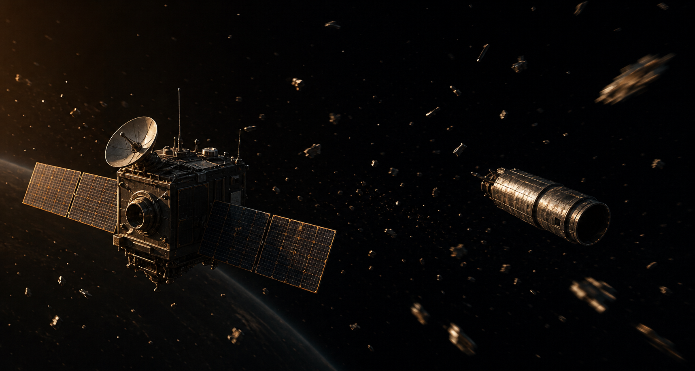
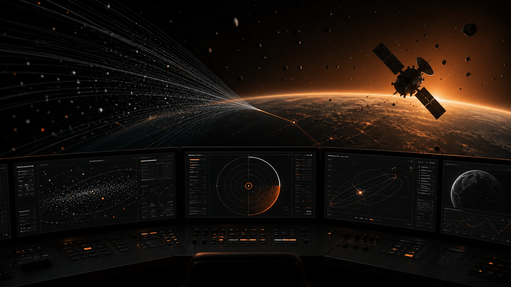
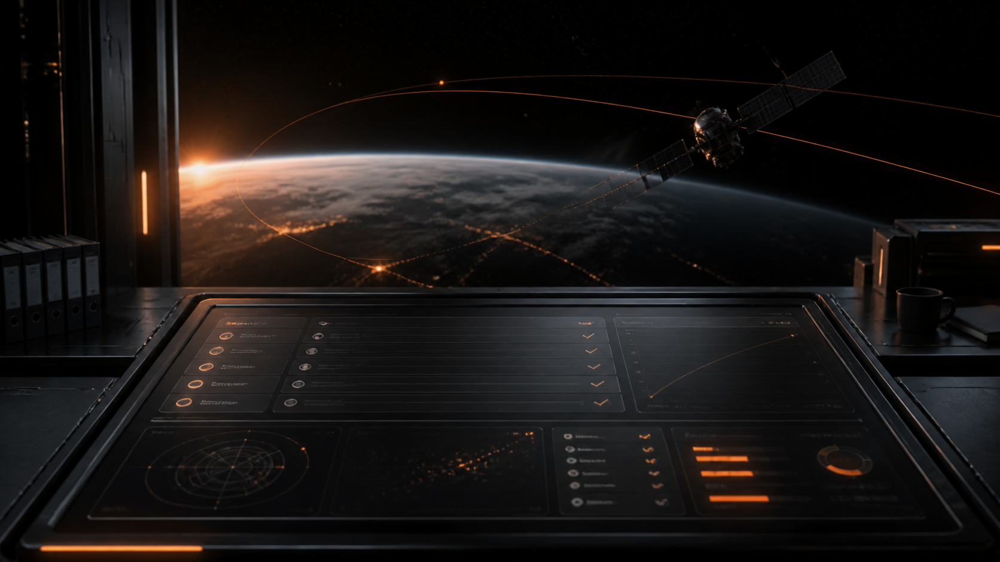
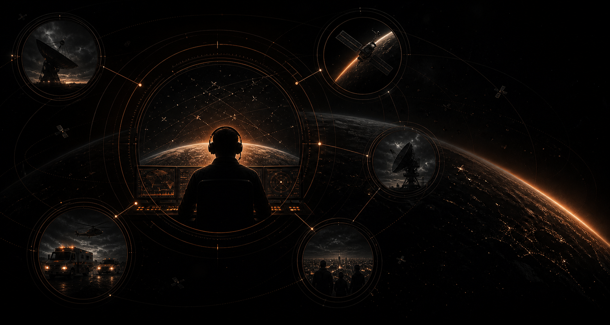

ORBITGUARD
Transforma alertas, telemetria e janelas curtas em uma decisão clara antes que o tempo de ação acabe.
O risco não é só o detrito. É decidir a tempo.
Detritos ameaçam satélites que sustentam GPS, internet, clima, comunicação e resposta a desastres.

Alertas genéricos não sustentam decisão.
O operador precisa entender objeto, urgência, confiança e consequência de não agir.A janela de contato define a resposta.
Sem comunicação disponível, até um risco alto exige outro encaminhamento.Toda manobra cobra parte da missão.
Desviar pode proteger o satélite, mas reduz combustível, vida útil e continuidade do serviço.OrbitGuard organiza alertas, telemetria e janelas de comunicação em uma recomendação clara, justificável e defensável.
Do alerta ao encaminhamento operacional.
O console reúne Risk Brief, Debris DNA, Action Window e simulação de impacto.
Cada recomendação mostra motivo, incerteza e consequência para apoiar uma decisão auditável.
Objetivos que reduzem incerteza.
OrbitGuard apoia o operador quando risco, tempo e custo se cruzam.
Cada objetivo responde a uma dor real da decisão orbital sob pressão.


Operadores no centro da decisão orbital.
O usuário principal é o controlador de satélite em centro de operação ou missão.
Ele cruza risco, tempo e comunicação antes que a janela de ação acabe.

Clareza antes do comando.
OrbitGuard reduz ruído e coloca risco, tempo e consequência na mesma leitura.
A decisão continua humana, mas ganha base explicável, registro e contexto operacional.
A decisão segue uma rota operacional.
O operador acompanha um evento simulado e cruza risco, contato e impacto.
Ao final, a ação escolhida fica registrada com justificativa curta.
Teste sua leitura sobre o risco espacial.
Responda 10 perguntas sobre detritos, impacto e decisão orbital.Fale com a equipe OrbitGuard.
Use este canal para dúvidas sobre a solução, simulações ou apresentação do projeto.